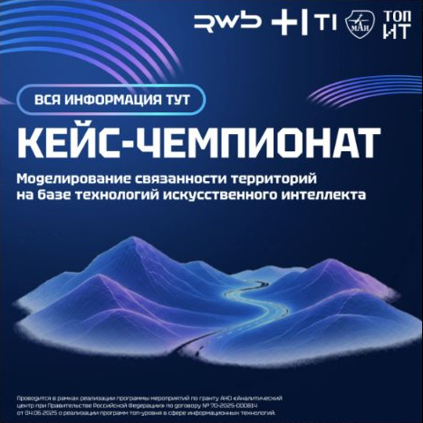
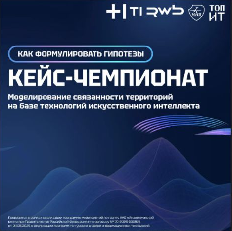
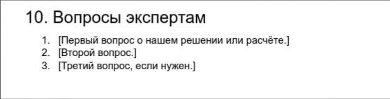
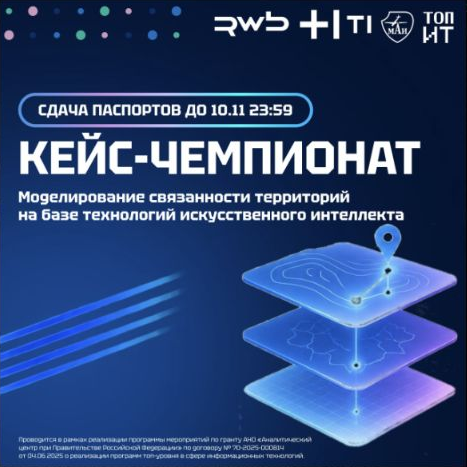

194 · 05.11 · Контекст: презентация о транспортной связности
pdf 2_Транспортная связность.pdf 342.9 KB
Прогнозы для транспортного планирования
Собрано только из чата «Кейс-чемпионат: МАИ × Т1 × RWB». Внешние ссылки не открывались. PDF/PPTX — оригиналы. Картинки из постов — снимки. Общий видеобрифинг 242 представлен сопровождающим текстом: видео скачать не удалось.
Полная опись и ограничения · Тексты Markdown · Список ссылок
Каталог открытых данных из задания А1 (PDF, страница 2)
https://docs.google.com/spreadsheets/d/1lWth7AgxGWDGiAHEXNgSjNQTaCmZDxHrBlmADg6GWLQ/edit
Вложение «1 кейс.pdf», сообщение 249
Условия кейсов, требования и источники данных
https://mai-way.ru/
Сообщения 254 и 269
Форма сдачи паспортов
https://forms.gle/RrtGTrrx46hGRJbQ6
Сообщения 276 и 288
Форма выбора кейса
https://forms.yandex.ru/u/6aec5f7b1f1eb50029369c4e
Сообщение 208




pdf 2_Транспортная связность.pdf 342.9 KB
pptx 5_Кейс_чемпионат_—_презентация_кейсов_v5.pptx 486.5 KB Презентации с экспертной сессии 14:36
Экспертная сессия позади! Сегодня вы познакомились с тематикой кейс-чемпионата, кейсами, задали вопросы экспертам. Пришло время определиться, над каким из 5 кейсов вы будете работать! Расширенные версии кейсов будут, но позже. Форма выбора кейса: https://forms.yandex.ru/u/6aec5f7b1f1eb50029369c4e Дедлайн заполнения формы — завтра до 11:00 Напоминаем, в ближайшие несколько дней вам предстоит сформулировать множество гипотез! И речь не о том, как долететь из Омска во Владивосток, а о куда более масштабных задачах: как будут двигаться беспилотные поезда, вокруг чего формируются агломерации, что определяет развитие городов и как новые транспортные технологии могут изменить связанность целых регионов. Обратите внимание: важно равномерно распределить команды между кейсами, поэтому организаторы оставляют за собой право изменить выбранный вами кейс. При распределении постараемся учесть ваши приоритеты. 3 1 19:30
2:43 Транспортная связность России: из чего она складывается? В рамках кейс-чемпионата «Связанность территорий» состоялся экспертный брифинг Исаевой Светланы Юрьевны — директора Центра маркетинга, директора Центра кадрового прогнозирования. Участники разобрали, как устроена транспортная связность России, какие факторы на неё влияют и что необходимо учитывать при разработке решений. Что важно учесть при работе над кейсами? Масштаб определяет задачи. Глобальная, межрегиональная, агломерационная связность и сообщение с труднодоступными территориями требуют разных подходов. Поэтому сначала важно определить, какую именно проблему должна решать модель. У каждого вида транспорта своя роль. Например, для крупных городов критически важен автомобильный транспорт, для межрегиональных перевозок — железнодорожный, а для труднодоступных территорий — авиация. Эффективное решение может потребовать сочетания нескольких видов транспорта. Наличие маршрута ещё не означает доступность. Необходимо учитывать стоимость, время и надёжность перевозок. Транспортная система должна обеспечивать не просто связь между точками, а возможность эффективно перемещать людей и грузы. Важно учитывать внешние ограничения. Климатические условия, экологическое воздействие и устойчивость инфраструктуры напрямую влияют на выбор транспортных решений. При моделировании транспортной связности недостаточно оценить существующую сеть маршрутов. Важно понимать, какие потребности она закрывает, где возникают ограничения и какие изменения действительно улучшат доступность территорий. 18:12
mari Owner pdf 1 кейс.pdf 1.8 MB
pdf 5 кейс.pdf 2.1 MB Расширенная версия кейсов 19:10
Вся информация о кейс-чемпионате в одном месте! Условия кейсов, этапы чемпионата, сроки сдачи, требования к материалам и полезные источники данных: https://mai-way.ru/ Сохраняйте ссылку и пользуйтесь при работе над кейсами! 20:53
Как правильно формулировать гипотезы для кейс-чемпионата? В основе хорошего решения лежит гипотеза, которую можно проверить на данных. Важно не просто предложить интересную идею, а объяснить, почему она должна сработать и как это доказать. 1. Начните с конкретной проблемы Не пытайтесь решить сразу все транспортные проблемы России. Выберите территорию, процесс или показатель, который хотите улучшить. Например: высокая нагрузка на транспортный узел, длительные пересадки, неравномерная загрузка складов. 2. Сформулируйте предположение Хорошая гипотеза описывает конкретное изменение и ожидаемый результат. «Нужно улучшить транспортную связанность регионов» - плохо «Если согласовать расписания поездов и автобусов в выбранном регионе, среднее время поездки между населёнными пунктами сократится» - хорошо 3. Определите, как проверить гипотезу Подумайте: Какие данные понадобятся? Какую модель или метод расчёта можно использовать? С чем будете сравнивать результат? По какому показателю поймёте, что гипотеза подтвердилась? 4. Сравните несколько сценариев Не ограничивайтесь одним вариантом. Например, что эффективнее: построить новый транспортный хаб или оптимизировать существующие маршруты? Увеличить складские мощности или точнее прогнозировать отгрузки? 5. Покажите результат в цифрах Гипотеза должна приводить к измеримому выводу: сокращению времени перевозки, снижению затрат, росту доступности территорий или повышению точности прогноза. Несколько идей для размышления: Можно ли предсказать, вокруг каких транспортных узлов будут формироваться новые агломерации? Как внедрение беспилотных поездов может изменить пропускную способность железнодорожной сети? Можно ли заранее определить, где возникнет перегрузка складов, и предотвратить простои? При каких условиях новый региональный авиахаб окажется эффективнее прямых рейсов? Главное: гипотеза — это предположение, которое команда сможет проверить с помощью данных, расчётов и моделей. 13:39
Шут Шиповниковый Добрый день, правильно ли я понял, что сегодня необходимо сдать полностью паспорт проекта? Или нужно сдать только его часть? 14:08
mari Owner Добрый день, правильно ли я понял, что сегодня необходимо сдать полностью паспорт проекта? Или нужно сдать только его часть? Шут нет, сегодня сдавать ничего не нужно, форму мы выложим завтра, дедлайн будет 10.11 23:39 14:10
mari Owner Добрый день! Подскажите, у 4 кейса так же нужно сделать паспорт проекта? И будет ли по этому кейсу отбор как по остальным? Млена паспорта делают все 14:18
@samokat Здравствуйте, я из команды "Маршрут построен". На сайте представлен шаблон для паспорта проекта и 10 пункт подразумевает вопросы экспертам. Что именно там должно быть, если мы вопросы задаем в чате? Заранее спасибо за ответ. edited 16:28
Друзья, напоминаем о сдаче паспортов проектов! Дедлайн — 10 ноября, 23:59 К этому времени каждой команде необходимо подготовить паспорт проекта на 2–3 страницы и отправить материалы через форму. Что должно быть в паспорте: состав команды, роли и вклад каждого участника; проблема, предложенное решение и его практическая польза; использованные данные, методы и связь с изучаемыми дисциплинами; полученные результаты, расчёты и сравнение вариантов; ограничения решения, дорожная карта и вопросы экспертам. К паспорту приложите ссылки на код, данные, расчёты и другие материалы, подтверждающие результаты. Убедитесь, что у экспертов есть доступ ко всем файлам. Показатели и обязательные материалы определяются условиями вашего кейса. Форма сдачи: https://forms.gle/RrtGTrrx46hGRJbQ6 Не откладывайте отправку на последние минуты! edited 14:38
Добрый вечер! В ссылках на дополнительные материалы указано, что надо прикрепить ссылку на гитхаб. Можно ли дать инвайт эксперту в репозиторий, чтобы не делать его публичным? 17:13
mari Owner Добрый вечер! В ссылках на дополнительные материалы указано, что надо прикрепить ссылку на гитхаб. Можно ли дать инвайт эксперту в репозиторий, чтобы не делать его публичным? хэстон чопстик нет, репозитории должны быть публичными 17:14
Савва @stttupina Здравствуйте, можно ли будет изменять код после 10 октября 23:59, то есть после дедлайна отправки паспорта проекта? 17:32
Maria Bulakina Admin @stttupina Здравствуйте, можно ли будет изменять код после 10 октября 23:59, то есть после дедлайна отправки паспорта проекта? Савва Код изменять можно ) С 17:32
hky а во вкладке "вопросы экспертам" паспорта надо написать вопросы которые задавались в течение разработки или те которые есть сейчас? 17:32
mari Owner а во вкладке "вопросы экспертам" паспорта надо написать вопросы которые задавались в течение разработки или те которые есть сейчас? hky которые у вас есть сейчас 17:42
mari Owner Друзья, напоминаем о сдаче паспортов проектов! Дедлайн — 10 ноября, 23:59 К этому времени каждой команде необходимо подготовить паспорт проекта на 2–3 страницы и отправить материалы через форму. Что должно быть в паспорте: состав команды, роли и вклад каждого участника; проблема, предложенное решение и его практическая польза; использованные данные, методы и связь с изучаемыми дисциплинами; полученные результаты, расчёты и сравнение вариантов; ограничения решения, дорожная карта и вопросы экспертам. К паспорту приложите ссылки на код, данные, расчёты и другие материалы, подтверждающие результаты. Убедитесь, что у экспертов есть доступ ко всем файлам. Показатели и обязательные материалы определяются условиями вашего кейса. Форма сдачи: https://forms.gle/RrtGTrrx46hGRJbQ6 Не откладывайте отправку на последние минуты! mari До окончания приёма паспортов проектов осталось меньше 7 часов! Напоминаем, что сегодня в 23:59 завершается приём материалов заочного этапа кейс-чемпионата. Убедитесь, что паспорт готов, все необходимые материалы приложены, а ссылки доступны экспертам. Форма сдачи: https://forms.gle/RrtGTrrx46hGRJbQ6 17:20
Сверх Разумwx В тз к паспорту проекта указано, что должны быть вопросы экспертам, в чем они должны заключаться и что из себя должны представлять edited 20:39
Daniil Yefimov Admin В тз к паспорту проекта указано, что должны быть вопросы экспертам, в чем они должны заключаться и что из себя должны представлять Сверх Разумwx это то, что вы хотите обсудить с экспертами на очной части 20:44
Друзья, уже совсем скоро начинаем! Сегодня в 16:00 начинаем регистрацию! Начнём день с экспертной сессии. Внимательно слушайте выступления экспертов: после сессии у вас будет возможность скорректировать свои доклады с учётом услышанного. Напоминаем о формате чек-поинта: На выступление каждой команды — строго 5 минут Слайд с составом команды озвучивать не нужно Пожалуйста, заранее проверьте тайминг своих выступлений Верхнюю одежду оставляем в ИТ-15 До встречи! edited 14:35
Чек-поинт Напоминаем о регламенте чек-поинта! 5 минут — на выступление команды (спитч). 3 минуты — на вопросы экспертов. Пожалуйста, соблюдайте тайминг! 17:42
Чек-поинт Напоминаем о регламенте чек-поинта! 5 минут — на выступление команды (спитч). 3 минуты — на вопросы экспертов. Пожалуйста, соблюдайте тайминг! mari Критерии Польза: Какую проблему решает проект, для кого и какую практическую пользу приносит. Результат: Наличие конкретного результата, расчётов и возможности их повторить. Данные и метод: Обоснованность исходных данных, выбранного метода и допущений. Проверка вывода: Проверка результатов, корректность сравнения и обоснованность выводов. 17:46
mari Owner pptx 1_Аэрофлот.pptx 3.2 MB